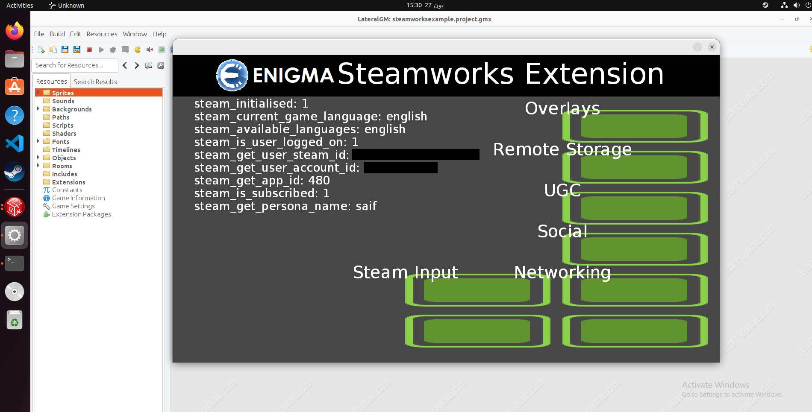

This blog post is related to my GSoC 2023 Project.
When I installed Linux successfully on my machine and tried to run the example game, it worked somehow. No ABI errors, no segmentation faults, no nothing. It just worked. I think that's because Steam.exe is compiled also using MinGW on Linux, it is not like Windows where it is compiled using MSVC. Anyway, I was happy that it worked, and let's move on.
Now let's implement the rest of the General API and start with the Overlay API. I am really off
schedule, and I need to catch up. When I started implementing the Overlay API, I found that there
is a function called steam_is_overlay_activated();. How can I implement this function?
well, I can create a variable and modify it whenever the overlay is activated using
steam_activate_overlay(); function. But, how can I know when the overlay is deactivated?
so the only way is to use Callbacks. I don't understand how Callbacks work with Steamworks, but I
start with the official example game and see how they implemented it. I started looking at the
official documentation, and the official example game at the same time. I realized that there are no
Callbacks implemented in the official example game for the Steam Overlay. Let's add it and see what
happens. I added the code inside OverlayExamples.cpp file as they did in other
Callbacks. I ran the Spacewar game, and when I press SHIFT+TAB, the overlay is activated, and a
message popped up saying "yaaay", and when I close it, another message popped up saying "nooo".
I also tried to remove the call to SteamAPI_RunCallbacks(); function inside
SpaceWarClient.cpp file to see when will happen, and the messages are not popped up.
Now I think I understand how Callbacks work. But in order to implement Callbacks in my project, I need to change the whole plan. Actually, I don't know how I have been accepted into GSoC 😅. I don't need to create a Wrapper in my project, I need to create a layer between Steamworks ENIGMA's extension and the official Steamworks SDK. This layer is some sort of architecture of classes, like composition for example. I looked at the Spacewar example game, and it has all I need. Let's modify the code I wrote so far.
I made some progress regarding the example game:


Here's the look I wish to reach:


On 27 June 2023, I stopped working on the project due to Eid Al-Adha and Arafa Day. It wasn't my best Eid, but I hope it will be better next year. I will continue working on the project on 2 July 2023.
On 2 July 2023, I started working on the project again. I finished implementing the Overlay API and moved on to the Achievements API. The example game is looking greater and greater. Instead of writing the Achievements API, I think this is a perfect time for writing tests for the implemented APIs till now. In order to do that, I need to keep Steam running, which also means that anyone who wants to run the tests needs to have Steam running. This is not good as the CI doesn't have Steam installed. Also, not all ENIGMA's developers have Steam installed. So, I need to write some sort of mock. I asked my mentor about this and he replied
go ahead and write the test anyway and have the CI skip it for now
R0bert — 03/07/2023 19:47